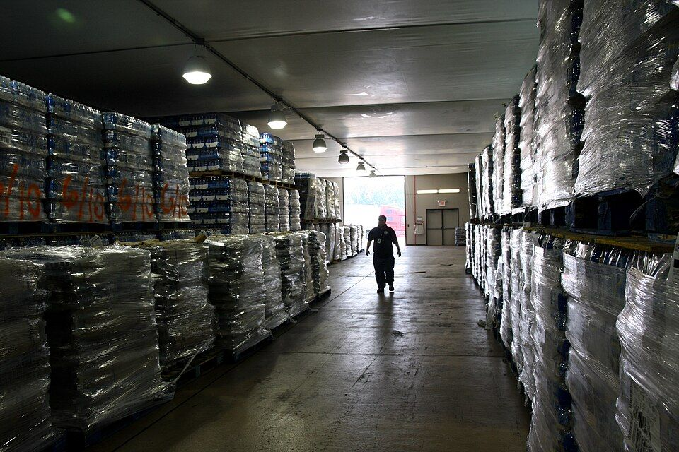

Planning agents move from detecting exceptions to coordinating responses
SAP expanded its Joule supply chain assistants with agents intended to connect planning, manufacturing and logistics decisions. The Planning Assistant is designed to sense, simulate and resolve exceptions in one workspace. General availability of the new capabilities is planned for Q4 2026; this announcement does not establish availability in every customer system.
Sources & further reading
SAP · Joule supply chain announcement, October 8 ↗Story or source date · Researched through 29 October 2026
